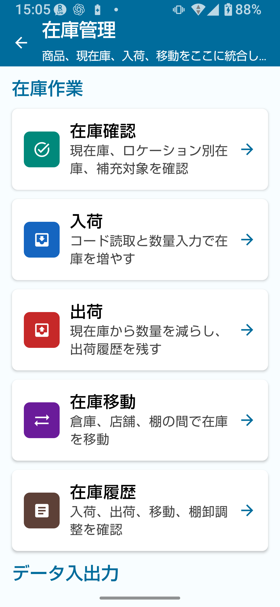
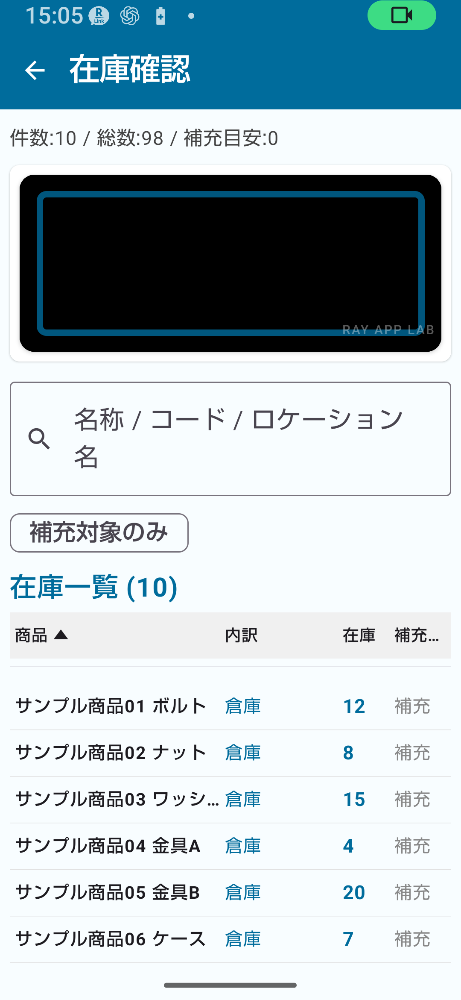
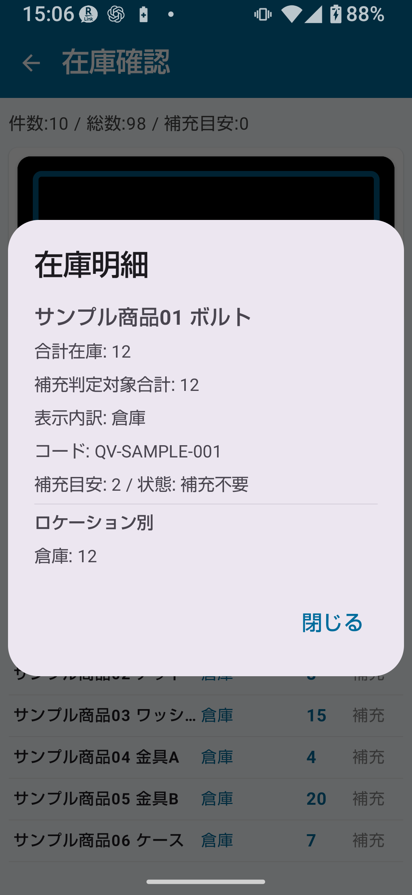

在庫管理は、商品の入荷・出荷・移動を管理し、現在の在庫数を把握する機能です。無料版でも、在庫確認、商品マスタ、入荷、出荷、在庫移動、履歴確認、CSV取込/出力を利用できます。
在庫管理の主な画面：在庫確認 / 入荷 / 出荷 / 在庫移動 / 在庫履歴 / データ入出力
💡 棚卸と在庫管理の違い
在庫管理は「入荷・出荷・移動」で在庫を動かす日常業務の記録です。棚卸（実際に数える作業）とは別機能です。混同しないようにしてください。

図1-1 在庫管理ホーム画面
| 項目 | 無料版の扱い | 補足 |
|---|
| 在庫管理データ量 | 無料版でも登録・利用可能 | 大量運用では必要に応じて解放を検討 |
| 在庫履歴 | 無料版でも記録・確認可能 | 大量運用では必要に応じて解放を検討 |
| CSV取込/出力 | 無料版でも利用可能 | 大量運用では必要に応じて解放を検討 |
| ロケーションマスタ登録 | 無料版では登録・編集不可 | 在庫管理 簡単解放以上、またはフル解放時 |
| 登録済累計の直接編集 | 利用不可 | いずれかのフル解放 |
| 商品コード/ロケーションコードルール | 利用不可 | いずれかのフル解放 |
| 詳細CSV設定 | 通常の取込/出力は利用可。詳細設定は画面案内に従う | フル解放で詳細設定を利用 |
⚠ 注意
データ量が増えた場合や詳細設定が必要な場合は、簡単解放またはフル解放の案内を確認してください。
在庫確認画面では、初期表示で商品ごとの合計在庫を確認できます。補充判定は、ロケーションマスタで「補充判定に含める」がONになっているロケーションの合計を使って判断します。

図3-1 在庫確認画面
在庫確認でできること
- 商品一覧で商品ごとの現在庫合計を確認する
- 商品名や商品コードで絞り込み検索する
- 補充目安と対象ロケーション合計を比較し、補充が必要な商品を確認する
- 商品をタップしてロケーション別内訳を開く。ロケーション別表示では補充判定は表示しない、または無効として扱う
在庫確認の手順
- トップ画面で「在庫管理」をタップする。
- 「在庫確認」を開く。
- 商品一覧から確認したい商品を探す（検索または一覧スクロール）。
- 商品をタップして在庫詳細を確認する。
在庫確認から商品をタップすると在庫詳細画面が開きます。

図4-1 在庫詳細画面
在庫詳細で確認できること
- 商品コード・商品名
- 合計在庫数量
- ロケーション別の在庫内訳
- 補充目安・価格（商品マスタに登録している場合）
- 品目
在庫管理は商品マスタ・品目カテゴリ・ロケーションマスタと連動します。マスタに正確な情報を登録することで、在庫管理の精度が上がります。
| マスタ名 | 主な役割 | 主な登録項目 |
|---|
| 商品マスタ |
実際に在庫を持つ商品を登録する |
商品コード/バーコード、商品名、品目、価格、補充目安 |
| 品目カテゴリ |
商品を分類するカテゴリを管理する |
カテゴリコード、カテゴリ名、表示順 |
| ロケーションマスタ |
在庫の場所を管理する |
ロケーションコード、ロケーション名、表示順、有効/無効 |
💡 商品と品目の違い
「商品」は実際に在庫を持つ管理対象です（例：Tシャツ・赤・Mサイズ）。「品目」はその商品を分類するカテゴリです（例：アパレル）。混同しないようにしてください。
⚠ 無料版でのロケーション
無料版では、基本ロケーション「倉庫」「店舗」を中心に利用します。詳細なロケーション登録や追加管理が必要な場合は、在庫管理 簡単解放以上の利用を検討してください。
無料版でも入荷・出荷・在庫移動を利用できます。在庫移動は商品・在庫・2つ以上のロケーションなど、操作に必要な条件を満たした場合に使います。
🔍 無料版での操作時の確認
入荷・出荷・在庫移動は在庫を即時に変更します。数量、商品、ロケーションを確認してから保存してください。
無料版での入荷・出荷・移動に関する案内
- 機能の入口（ボタン）は表示されている場合があります。
- 在庫移動は、移動元と移動先が同じ場合や対象在庫がない場合は実行できません。
- 表示される案内の指示に従って操作してください。
- 入荷で未登録の商品コードを扱う場合は、商品マスタ新規登録へ進む導線が表示される場合があります。
- 出荷画面の在庫欄は現在庫の表示であり、直接編集する入力欄ではありません。
💡 ヒント
大量データや詳細なロケーション/CSV運用が必要な場合は、簡単解放またはフル解放を検討してください。
無料版でもCSV取込・出力・バックアップを利用できます。操作前には内容を確認し、重要なデータはバックアップしてください。
| 項目 | 無料版 | 簡単解放 | フル解放 |
|---|
| 在庫表CSV | 利用可 | 利用可 | 利用可 |
| CSV取込 | 利用可（確認画面に従う） | 利用可（確認画面に従う） | 利用可（確認画面に従う） |
| バックアップCSV | 利用可 | 利用可 | 利用可。詳細設定と組み合わせた運用も可能 |
⚠ 注意
CSV取込/出力は在庫数を大きく変更する場合があります。詳細CSV設定は画面案内に従い、必要に応じてフル解放を確認してください。
| 機能 | 必要なプラン |
|---|
| 大量データの継続運用 | 必要に応じて簡単解放またはフル解放を検討 |
| 長期履歴の安定運用 | 必要に応じて簡単解放またはフル解放を検討 |
| 大量CSVの運用 | 画面案内に従い、必要に応じて解放を検討 |
| 画面回転固定 | 在庫管理 簡単解放以上 |
| ロケーションマスタ登録（詳細） | 在庫管理 簡単解放以上、またはフル解放時 |
| 登録済累計の直接編集 | いずれかのフル解放 |
| 商品コード/ロケーションコードルール | いずれかのフル解放 |
| CSV拡張出力 | いずれかのフル解放 |
| 棚卸データの在庫反映 | 在庫管理側の確認画面と条件に従って操作 |
少品目での在庫確認に活用する
小規模運用であれば、無料版で在庫確認や日常操作を始められます。補充目安の確認や在庫数の把握に役立てられます。
サンプルデータで操作を練習する
設定画面からサンプルデータを作成すると、練習用の商品・在庫データが準備されます。本番登録前に操作を確認しておくことをおすすめします。
定期的にCSV出力して記録を残す
定期的にCSV出力し、在庫記録をPCやスプレッドシートに蓄積しておくことをおすすめします。
件数上限に近づいたら移行を検討する
商品数や履歴が増えてきたら、在庫管理 簡単解放またはフル解放への移行を検討してください。
💡 こんな場合は簡単解放への移行を検討
- 商品数や履歴が増えてきた
- 入荷・出荷の履歴を長期間残したい
- ロケーション（倉庫・店舗）を使い分けたい
📌 この章のポイント
- 在庫管理は入荷・出荷・移動で在庫を動かす日常業務の記録機能。棚卸とは別。
- 無料版でも在庫確認、入荷、出荷、在庫移動、CSV取込/出力を利用できます。
- 在庫確認では商品ごとの現在庫・ロケーション別内訳・補充対象を確認できる。
- 在庫管理は商品マスタ・品目カテゴリ・ロケーションマスタと連動する。
- 入荷・出荷・移動は、対象商品・数量・ロケーションを確認してから保存する。
- 件数上限に近づいたら簡単解放またはフル解放への移行を計画する。
🔍 ご利用前の確認事項
- 入荷・出荷・在庫移動は在庫数を直接変更します。保存前に内容を確認してください。
- 詳細なロケーション管理が必要な場合は、在庫管理 簡単解放以上の利用を検討してください。
- バックアップCSVやデータ出力を行う場合は、画面の案内と出力ファイルの内容を確認して利用してください。
- 棚卸データを在庫へ反映する場合は、在庫管理側の確認画面と条件を確認してください。
- 在庫詳細画面の表示内容は、アプリ内の最新表示を確認してください。